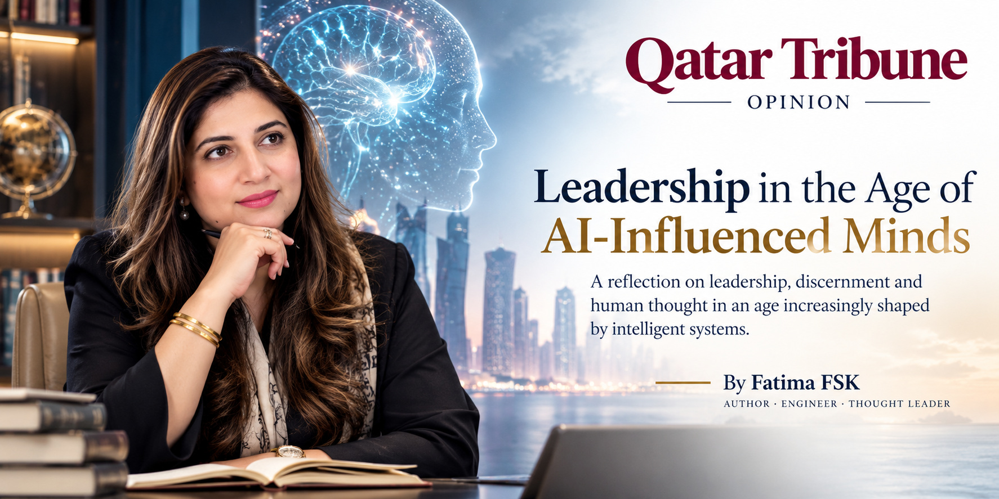
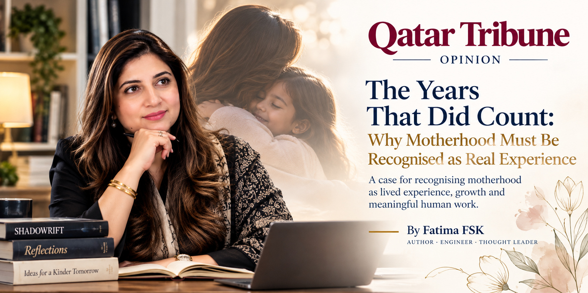
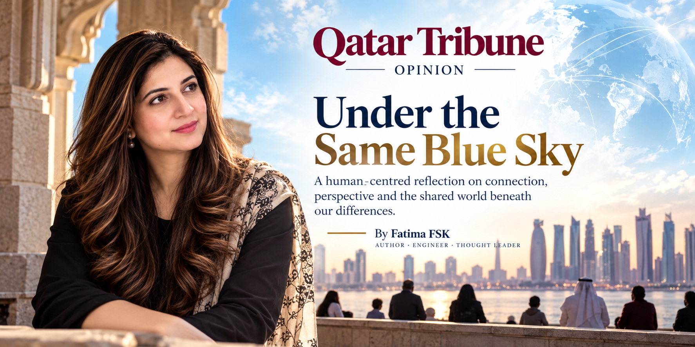

Observe / Published work
Observations.
A curated gateway to Fatima's essays and published writing. The portfolio introduces each idea; long-form future writing can live on the dedicated editorial publication and remain connected here.



Selected writing
Ideas worth
staying with.
Current published work, with room for future articles to be added from one central content file.
The long-form journal
Read beyond the portfolio.
Future essays and full-length writing will live on Fatima's dedicated editorial publication. This portfolio remains the central identity and curated gateway.